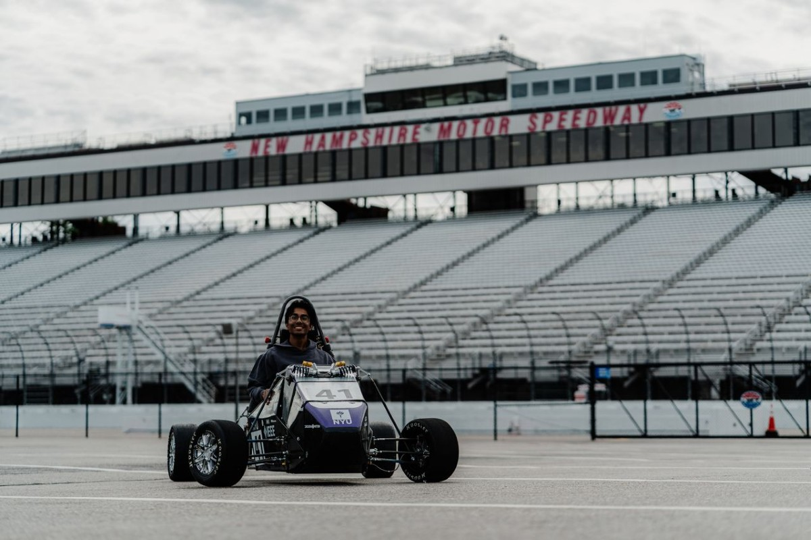
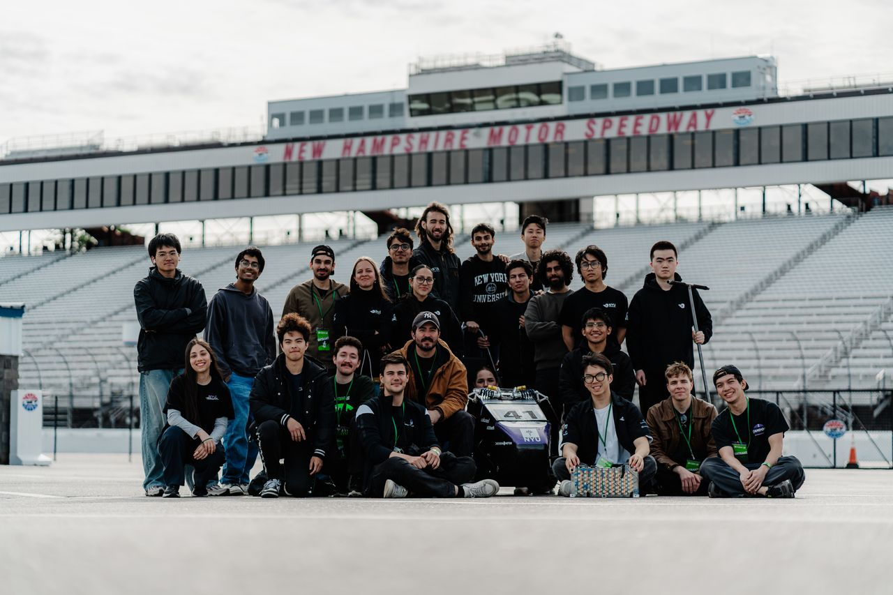
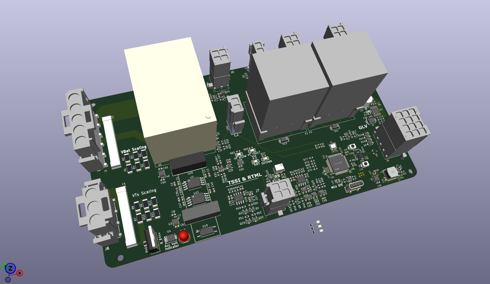
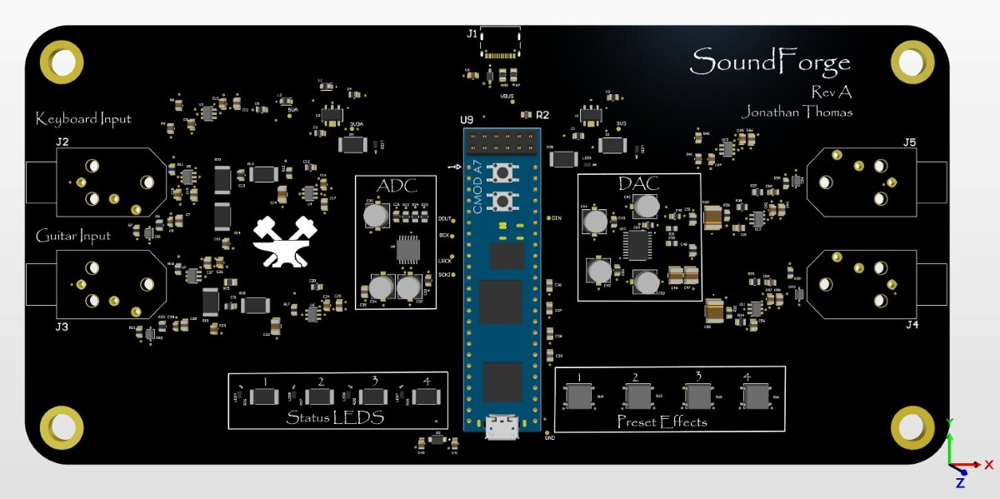
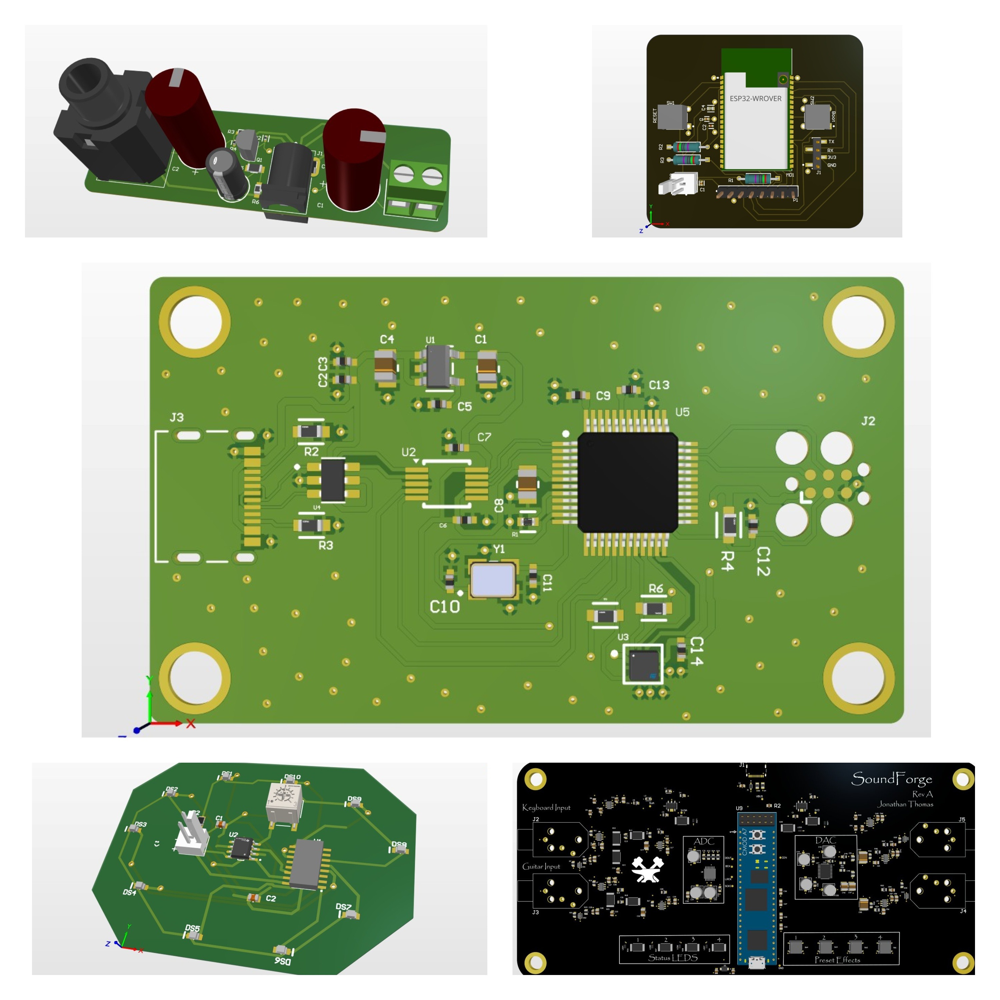
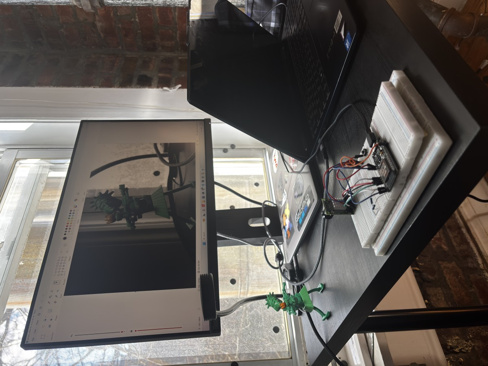
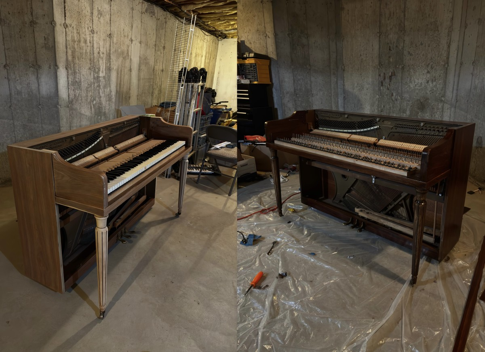
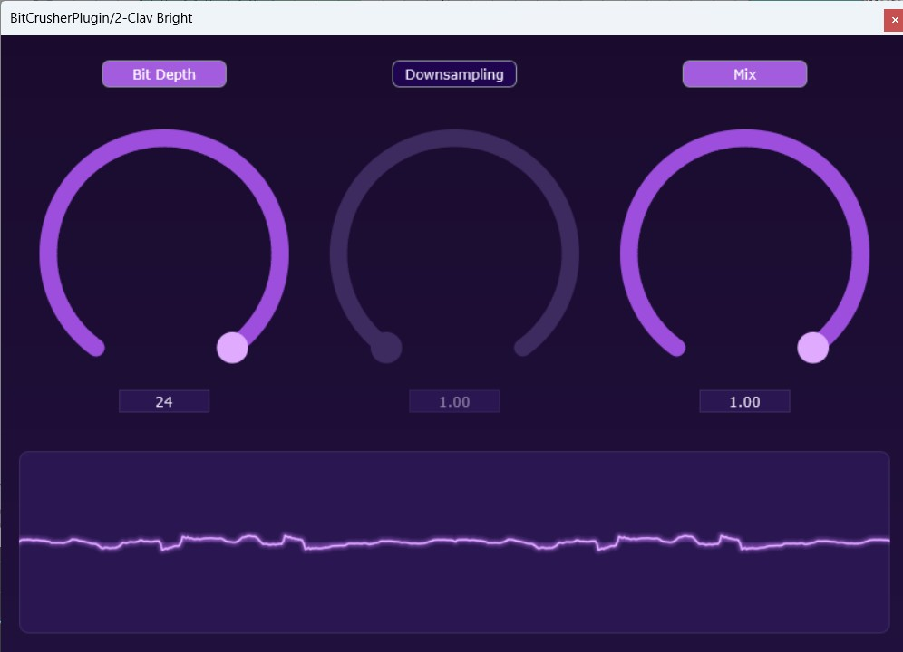
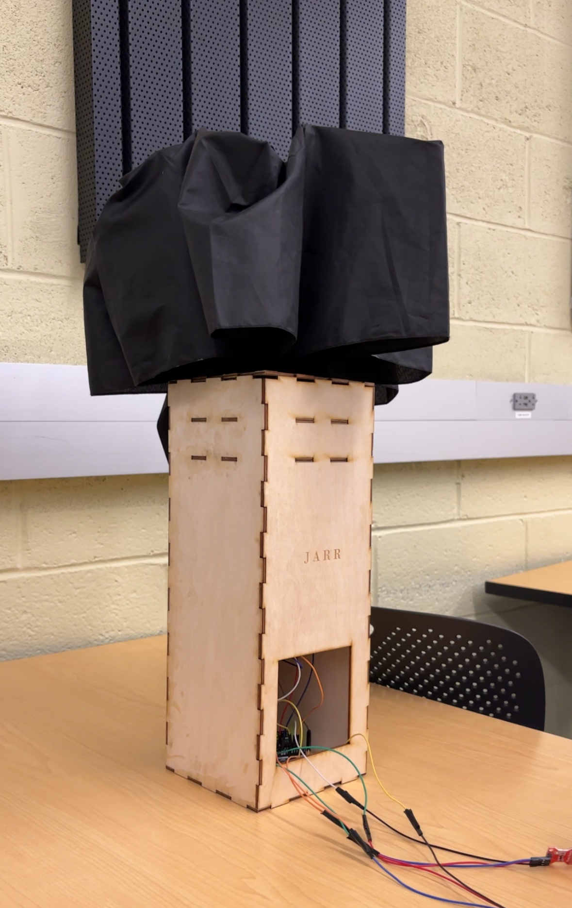

JT's corner of the internet

About
Hey, I'm Jonathan Thomas (also sometimes known as JT). I'm a junior at NYU majoring in Electrical and Computer Engineering.
I love playing piano and music as a whole (I can talk to you about any genre you want), tennis, and videogames.
I'm currently working on our accumulator to make a fast, efficient, and safe car. I'm also working on various music technology projects such as custom plugins for local producers and building my own audio hardware.
- High Voltage leadNYU Motorsports
- Teaching assistantNYU MakerSpace
- B.S. Electrical & Computer EngineeringNYU Tandon
Projects

NYU Motorsports
High Voltage lead on our Formula SAE team. Currently working on finishing the accumulator to make us a competitive team for the 2026-2027 season.

Tractive System Control Board In progress
Redesigning our team's high-voltage precharge and indicator board in KiCad, with lamp check logic and an accumulator voltage indicator powered straight from the tractive system.

SoundForge
"The One pedal to rule them all": an FPGA carrier board that runs any guitar or keyboard effect you design, digitally. Currently building a library of digital effects for it.

PCB Evolution
My journey learning board design in Altium, from a rough LED chaser to a BJT amplifier to an FPGA audio board.
See 5 more projectsHide extra projects

Electro TA
A live AI teaching agent that debugs hardware in real time, built for Gemini's Live Agent Challenge with an ESP32 and Arducam.

Automatic Player Piano In progress
A roadside piano I'm refurbishing and automating into a self-playing "ghost" piano with MIDI-driven keys.

BitCrusher Plugin
An audio VST I built for that classic videogame style sound.

Tape Recorder Plugin In progress
A custom tape-recorder VST effect I'm building for a close friend and producer.

Automatic Umbrella Deployer
My first-semester engineering project at NYU: an umbrella that deploys itself when it detects water.
Resume
Let's chat
I'm always happy to talk engineering, music, or anything in between.